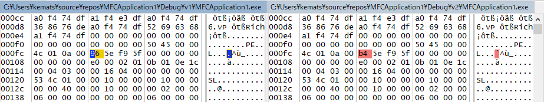
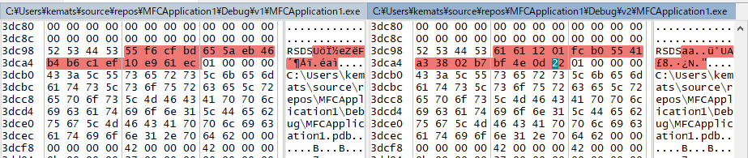

こんにちは、Japan Developer Support Core チームの松井です。
今回は、Visual Studio に含まれる C++, C#, Visual Basic.NET における、同一ソースコードから生成されるビルド成果物のバイナリ同一性についてご案内します。
はじめに
「同一ソースコードをビルドして得られる成果物は、毎回のビルド毎にバイナリ レベルで同一であることが保証されるか?」というご質問は、私たちのサポート チームによくいただくお問い合わせ内容の一つです。同一ソースコードからバイト単位で同一のビルド成果物を得られるようにすることは、決定論的 (deterministic) ビルド、再現可能 (reproducible) ビルドなどとして弊社製品に限らず様々な場所で議論されています。
ご質問の背景は様々ですが、お客様からいただく代表的なものとして以下のような状況が挙げられます。
- ビルド環境 (OS や Visual Studio など) の移行を行うので、移行前後の成果物を比較してビルド環境に問題がないことを保証したい
- ビルド毎に得られる成果物をバイナリ比較することでそれらが同等であるかを確認し、再テストや再リリースの要否を判断したい
結論から述べると、1. については環境もビルドの入力と見なされることから実現できずビルド成果物は同一にならない可能性があり、また同一になったとしてもビルド環境に問題がないことの保証にもなりません。2. についてもビルド ツールの対応や環境などについて前提条件が生じます。そのため、ビルド成果物に相違が生じる要因やビルド ツールの対応状況、同一のビルド成果物を得るための前提条件について理解することが重要です。
なお、この記事ではビルド成果物をバイト単位で見たときのバイナリ レベルの同一性について触れています。ソースコードやリンクされるオブジェクト類が同一であれば、同じビルド ツールによって生成されるビルド成果物の動作や機能に相違が生じるようなことは通常ありません。この点はご安心ください。
ビルド成果物に相違が生じる主な要因について
EXE や DLL などのヘッダー情報 (Portable Executable header) には TimeDateStamp フィールドが含まれており、成果物が作成された日時がコンパイラーやリンカーなどのビルド ツールによって書き込まれます。また、EXE や DLL とそのデバッグ情報を含むシンボル ファイル (PDB ファイル) を一意に関連付けるために、ビルド時にランダムな値が識別子として生成され EXE や DLL、PDB ファイルに埋め込まれます。これらはビルドする度に毎回異なる値となりますので、比較すると下図のように相違が生じていることが分かります。


同一ソースコードをビルドした成果物にバイナリ レベルで相違が生じる原因としては、生成されるファイル内に埋め込まれるこのようなタイム スタンプやソース ファイルのパス、乱数が主なものとして挙げられます。また、C# および Visual Basic.NET における CallerFilePath 属性や、C/C++ における FILE マクロや DATE マクロのように、コンパイルしたソースコードの場所や日時などに展開するための機能もあり、このような言語やプラットフォームに固有の機能も決定論的ビルドの妨げとなる可能性があります。その他にも弊社のブログ記事の中でいくつかの要因が挙げられていますので、興味のある方はあわせてご参照ください。
Visual C++ の対応について
Visual C++ のコンパイラーおよびリンカーは、この記事の執筆時点では決定論的ビルドをサポートしていません。
Visual Studio に付属する dumpbin ツールの /disasm オプションを使用することで、前項で挙げたタイムスタンプやシンボル ファイルの識別子といった要因を除外して実行命令のみを逆アセンブルして抽出することが可能ですので、この方法でビルド成果物を比較した場合は一致が見られる可能性はあります。
ただし、決定論的ビルドはサポートされておらずビルド成果物のバイナリ レベルでの一致も保証されていませんので、逆アセンブルした結果で比較しても相違が生じている可能性があります。また、どのような条件でどのような相違が生じるのかについても、すべてを網羅して明確にお答えすることはできません。
C# および Visual Basic.NET の対応について
C# および Visual Basic.NET のコンパイラー、およびビルド ツールとして利用される MSBuild では、決定論的ビルドを行うためのコンパイラー オプションやプロパティが提供されています。
[C#] https://docs.microsoft.com/ja-jp/dotnet/csharp/language-reference/compiler-options/deterministic-compiler-option
[VB.NET] https://docs.microsoft.com/ja-jp/dotnet/visual-basic/reference/command-line-compiler/deterministic
[MSBuild] https://docs.microsoft.com/ja-jp/visualstudio/msbuild/common-msbuild-project-properties
C# および Visual Basic.NET における決定論的ビルドは “同一の入力” に対して “同一の出力” を生成することを目的としています。”入力” として見なされる事項は以下のドキュメントで列挙されていますが、ソースコード以外にも様々あり、これらの条件が異なれば生成されるビルド成果物にも相違が生じる可能性がありますので注意してください。
https://github.com/dotnet/roslyn/blob/master/docs/compilers/Deterministic%20Inputs.md
なお、この機能は Visual Studio 2015 Update 2 で追加されました。以前のバージョンの Visual Studio には含まれていませんので、利用する場合は新しいバージョンの Visual Studio へアップグレードしてください。
参考情報
弊社外のサイトとなりますが、以下のブログ記事で C# および Visual Basic.NET の決定論的ビルドに関連して詳細に解説されていますので、参考にしていただければ幸いです。
https://blog.paranoidcoding.com/2016/04/05/deterministic-builds-in-roslyn.html
本ブログの内容は弊社の公式見解として保証されるものではなく、開発・運用時の参考情報としてご活用いただくことを目的としています。もし公式な見解が必要な場合は、弊社ドキュメント (https://docs.microsoft.com や https://support.microsoft.com) をご参照いただくか、もしくは私共サポートまでお問い合わせください。